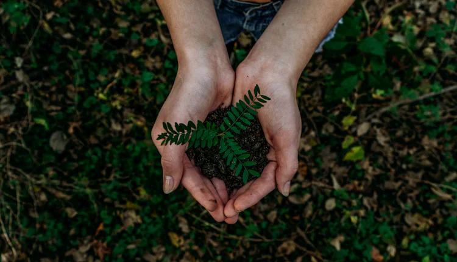
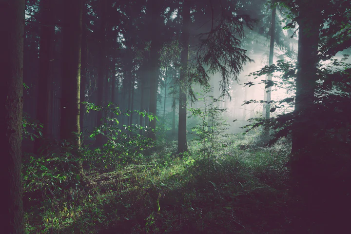
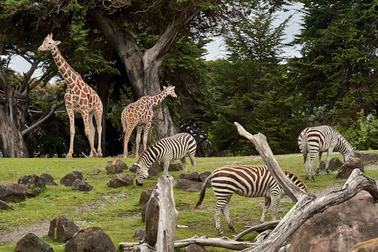
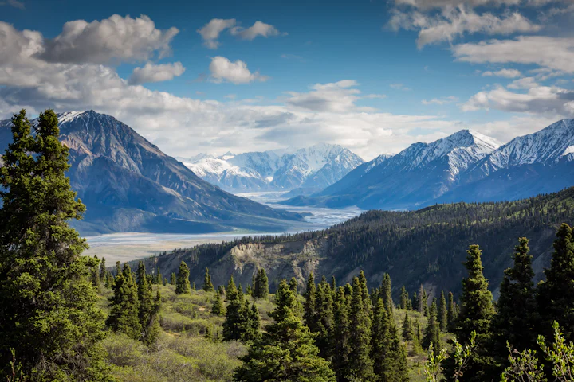
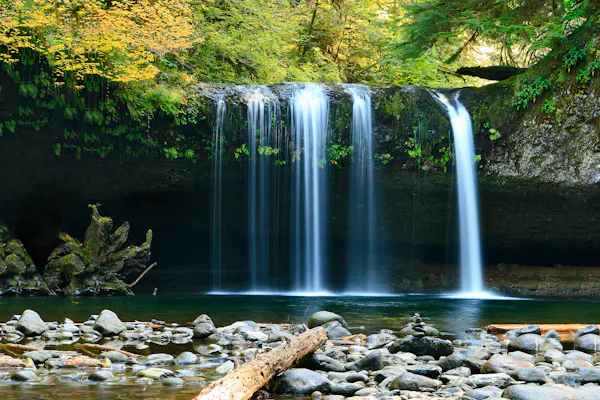
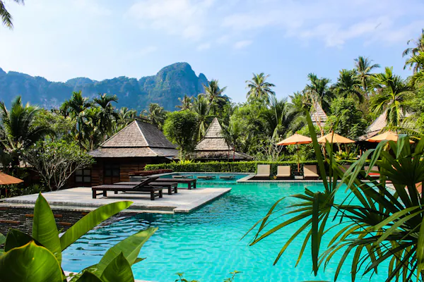
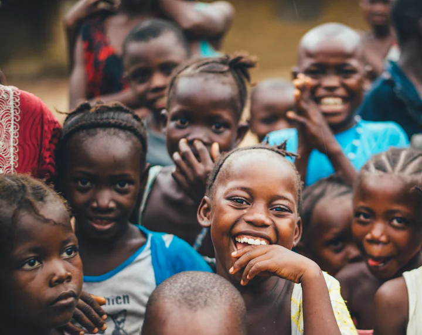

Learn about our approach to nature-based travel, local experiences, and responsible tourism.
Active support for wildlife sanctuaries and biodiversity corridors
Direct economic revenue to indigenous villages and local guides
Strict wilderness pack-in/pack-out protocols with zero footprint

Conservation before commercialization
The mission of the Stackly Eco Tourism platform is to make nature-focused travel easier to discover, evaluate, and plan while actively cultivating responsible traveler behavior across fragile global habitats.
Mass tourism often exhausts local water reserves, degrades mountain trails, and marginalizes indigenous residents. We demonstrate how careful travel planning, small guided groups, and strict leave-no-trace protocols allow humans to marvel at nature without compromising its delicate equilibrium.
These four principles guide every sample itinerary, destination profile, and ecological briefing featured on our platform.
Prioritizing strict leave-no-trace wilderness ethics, wildlife preservation boundaries, and reducing non-renewable resource consumption.
Directly supporting family-run retreats, respecting sacred cultural spaces, and partnering with resident wilderness guides.
Encouraging unhurried, educational interactions with natural landscapes rather than rapid-fire commercial tourist circuits.
Equipping adventurers with packing checklists, regional trail regulations, and transparent difficulty assessments.
From ancient temperate forests to solar-powered mountain valleys, discover how nature experiences are structured thoughtfully.






Every visitor plays an active role in stewardship. Please review these essential considerations before setting foot on wilderness trails.
Never approach, feed, touch, or harass wild creatures. Use telephoto zoom optics and respect seasonal mating and nesting sanctuary closures.
Pack out 100% of trash, food peelings, hygiene items, and packaging. Natural degradation in alpine or arid conditions can take decades.
Shortcutting switchbacks accelerates slope erosion and crushes fragile moss layers. Walk single file in the center of the trail.
Request permission before photographing residents or sacred altars. Observe dress etiquette and support fair compensation for indigenous guides.
Use designated camp stoves rather than open wood fires. Wash dishes and brush teeth at least 200 feet away from pristine streams and tarns.
Heed ranger bulletins, purchase required environmental conservation permits willingly, and heed fire danger indexes at all times.
Practical inquiries regarding sustainable travel definitions, accommodation evaluation, and trip preparation.
Explore our range of nature-based services, guided outdoor adventures, and sustainable lodge retreats.
Explore Services